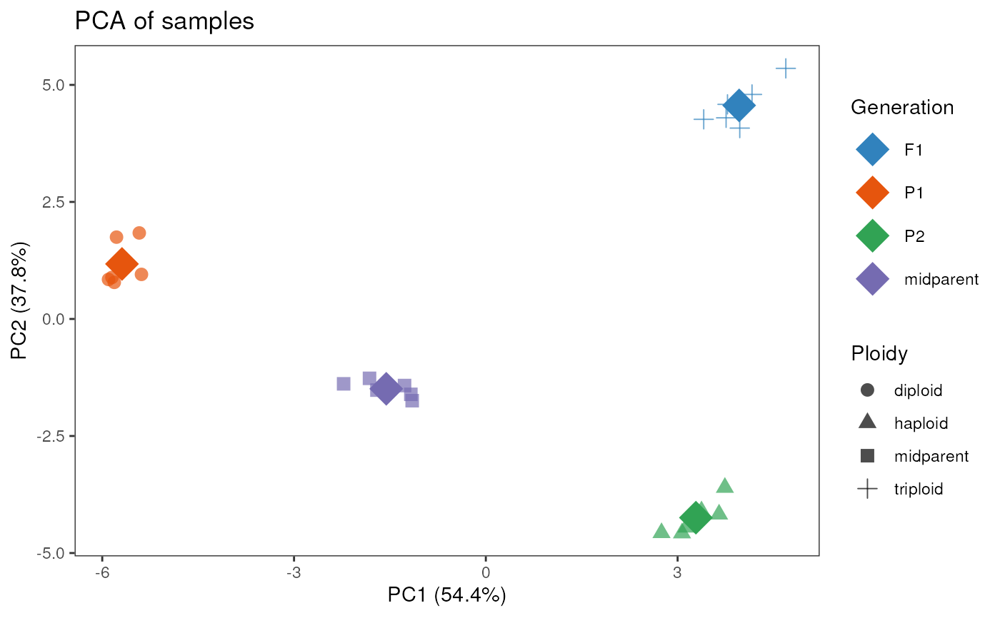

Perform a principal component analysis (PCA) and plot PCs
pca_plot(
se,
PCs = c(1, 2),
ntop = 500,
color_by = NULL,
shape_by = NULL,
add_mean = FALSE,
palette = NULL
)A SummarizedExperiment object with a count matrix and sample
metadata.
Numeric vector indicating which principal components to show
in the x-axis and y-axis, respectively. Default: c(1,2).
Numeric indicating the number of top genes with the highest variances to use for the PCA. Default: 500.
Character with the name of the column in colData(se)
to use to group samples by color. Default: NULL.
Character with the name of the column in colData(se)
to use to group samples by shape. Default: NULL.
Logical indicating whether to add a diamond symbol with the mean value for each level of the variable indicated in color_by. Default: FALSE
Character vector with colors to use for each level of the variable indicated in color_by. If NULL, a default color palette will be used.
A ggplot object with a PCA plot showing 2 principal components in each axis along with their % of variance explained.
data(se_chlamy)
se <- add_midparent_expression(se_chlamy)
se$Ploidy[is.na(se$Ploidy)] <- "midparent"
se$Generation[is.na(se$Generation)] <- "midparent"
pca_plot(se, color_by = "Generation", shape_by = "Ploidy", add_mean = TRUE)
#> converting counts to integer mode
